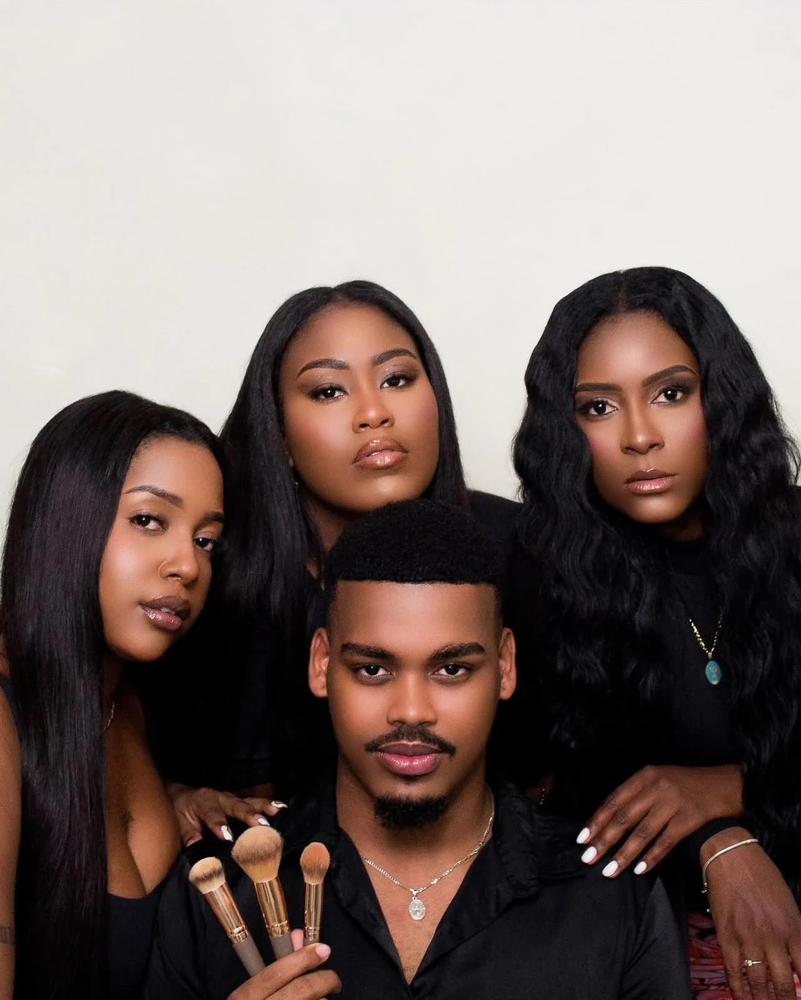
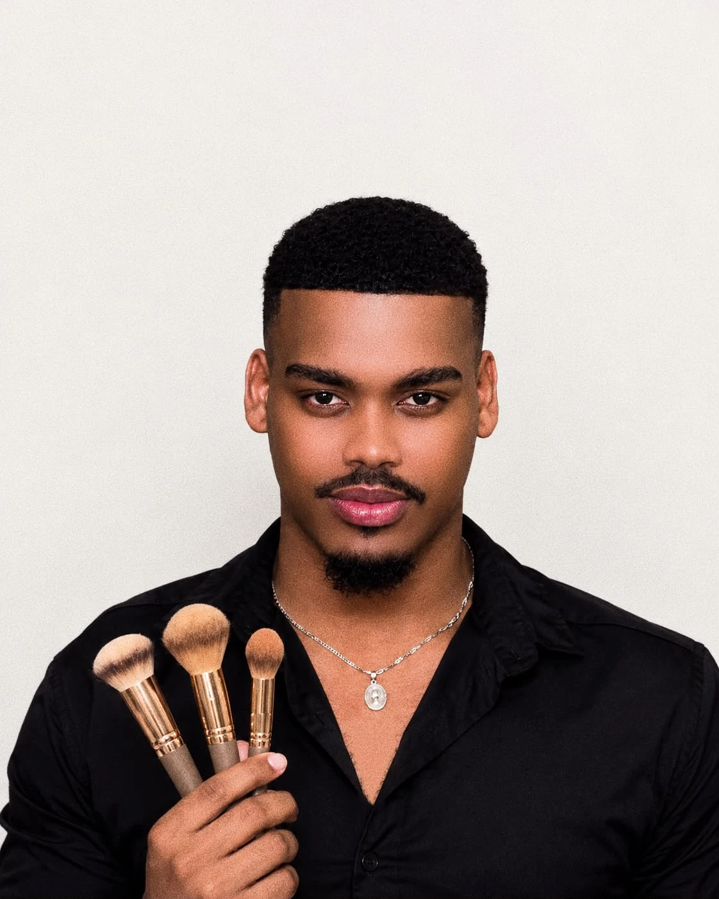

EL ARTE DE REALZAR TU BELLEZATu esencia,
Tu esencia,
realzada.
Maquillaje que celebra quién eres.
Un look pensado para ti y para ese momento.

BEAUTY, WITH AN ARTIST’S TOUCH.01 / ELIGE TU LOOKPara cada ocasión,
Para cada ocasión,
tu mejor versión.
Cuatro formas de expresar tu belleza.
Descubre el maquillaje que va contigo.
02 / EL PORTAFOLIORostros reales.
Rostros reales.
Arte que se siente.
Una mirada a mi trabajo.
Toca una foto para verla de cerca.
ARTBYGARCIA / CADA ROSTRO, UNA HISTORIA

03 / DETRÁS DE LAS BROCHAS¡Bienvenidos
¡Bienvenidos
a mi mundo!
Soy Remsy Rolando, tengo 26 años y soy maquillista profesional. Mi camino en el maquillaje comenzó en 2020, cuando descubrí que mi pasión podía convertirse en una forma de expresión artística a través de mis manos.
Desde entonces, he dedicado tiempo, esfuerzo y amor a perfeccionar mi técnica, desarrollar mi creatividad y transformar cada rostro en una obra de arte.
“No solo maquillo rostros: creo experiencias, transmito emociones y dejo una parte de mi arte en cada trabajo.”
Remsy GarciaPROFESSIONAL MAKEUP ARTIST
Hagamos de tu look
algo inolvidable.
Cuéntame la ocasión y la fecha.
Coordinamos los detalles por WhatsApp.